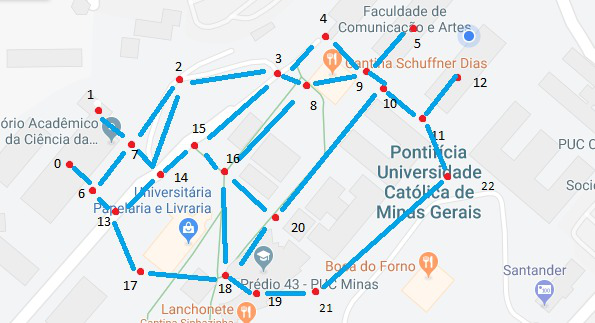

<ion-header>
  <ion-toolbar>
    <ion-title>
      Puc Routes
    </ion-title>
  </ion-toolbar>
</ion-header>

<ion-content>
  <ion-grid>
    <ion-row>
      <ion-card>
        <ion-card-content>
          <ion-row align-items-center>
            <ion-icon name="locate"></ion-icon>
            <ion-input 
              placeholder="Escolher ponto de partida..." 
              [(ngModel)]="vi"
            ></ion-input>
          </ion-row>
          <ion-row align-items-center>
            <ion-icon name="pin"></ion-icon>
            <ion-input 
              placeholder="Escolher destino..." 
              [(ngModel)]="vf" 
              (ionBlur)="presentLoading()"
            ></ion-input>
          </ion-row>    
          <ion-row *ngIf="caminho !== ''" align-items-center>
            <ion-icon name="navigate"></ion-icon>
            <ion-input [value]="caminho" disabled></ion-input>
          </ion-row>
        </ion-card-content>
      </ion-card>
    </ion-row>
    <ion-row>
      <ion-card>
        <ion-card-content>
          <ion-row justify-content-center align-items-center>
            
          </ion-row>
        </ion-card-content>
      </ion-card>
    </ion-row>
  </ion-grid>
</ion-content>
